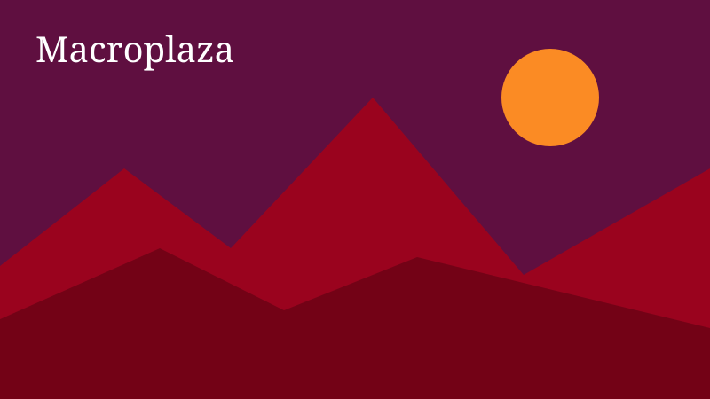
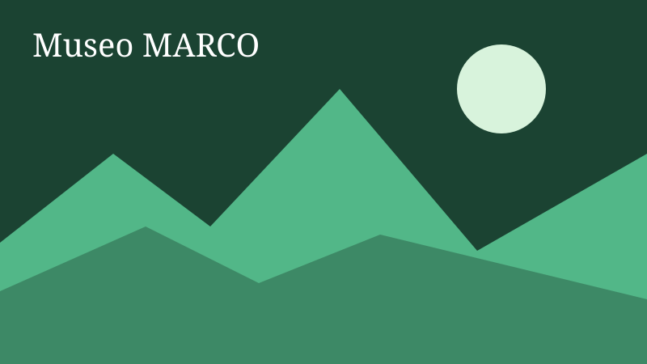

Cultura y museos

La Macroplaza es una de las plazas públicas más grandes del mundo y reúne fuentes y monumentos.

El MARCO exhibe arte contemporáneo y es una parada obligada para quienes visitan el centro.
El Paseo Santa Lucía conecta el centro con el Parque Fundidora mediante un canal navegable.
Otoño y primavera tienen el clima más agradable.
El Metro y los camiones conectan la mayoría de los puntos del centro.
Gratis Familiar